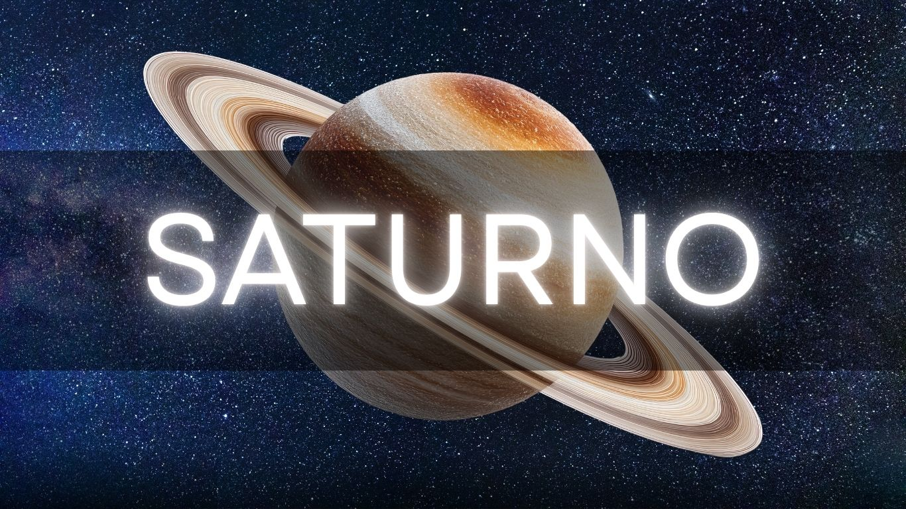

DATOS DE SATURNO

Saturno es otro de los planetas más grandes del sistema solar, por lo que al igual que Júpiter, recibe su nombre de uno de los dioses más importantes de la mitología para griegos y romanos, quienes respectivamente se referían a él como Cronos y Saturno, y en sendas mitologías fueron padres de Zeus y Júpiter. Cronos y Saturno eran, de hecho, los dioses del tiempo y la agricultura. Saturno es el planeta que a lo largo del año se puede observar durante más tiempo en el firmamento, por lo que la elección de ambas culturas pa
ra nombrar a este gigante gaseoso no es una casualidad.
Saturno es el segundo planeta más grande del sistema solar, después de Júpiter. Conocido por su sistema de anillos, pertenece a los planetas llamados jovianos, que están después del cinturón de asteroides, que los separa de los planetas rocosos.
Conocido desde la Antigüedad, pues es uno de los 5 planetas visibles a simple vista y el más alejado de ellos, Galileo fue el primero en observarlo por telescopio en 1610. Aunque notó la deformación causada por los anillos, la falta de resolución del instrumento no le permitió distinguir su forma.
Fue años después, en 1659, cuando Christian Huygens describió acertadamente los famosos anillos. Poco tiempo después, el astrónomo italiano Giovanni Cassini vio que los anillos tenían una división, que ahora se llama división Cassini.
.png)